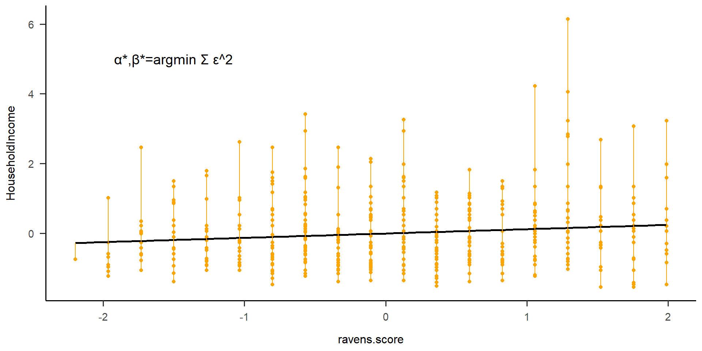
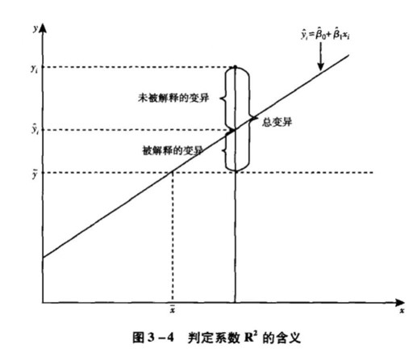
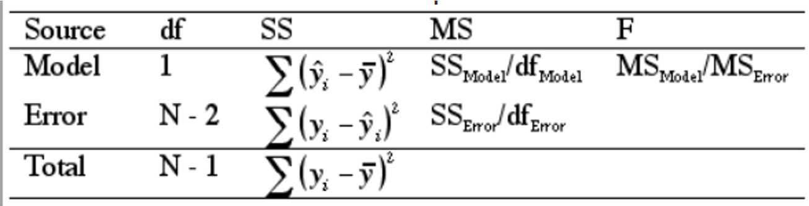
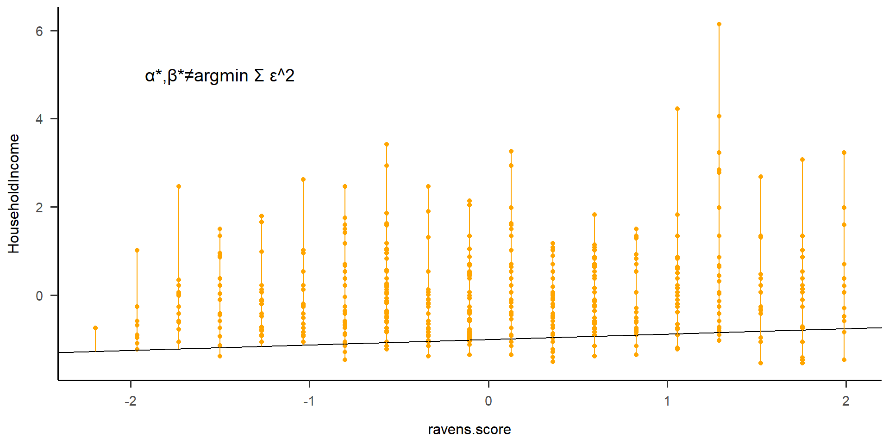
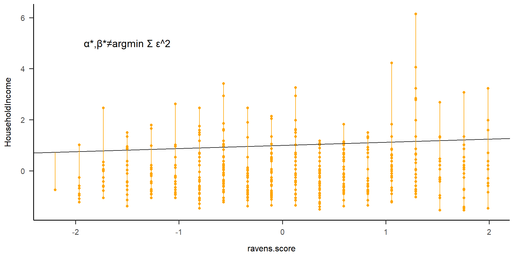
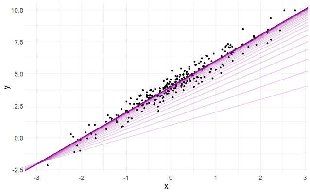
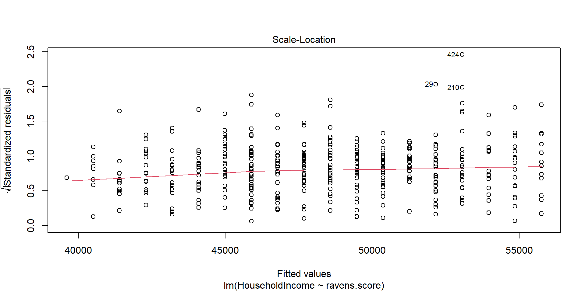
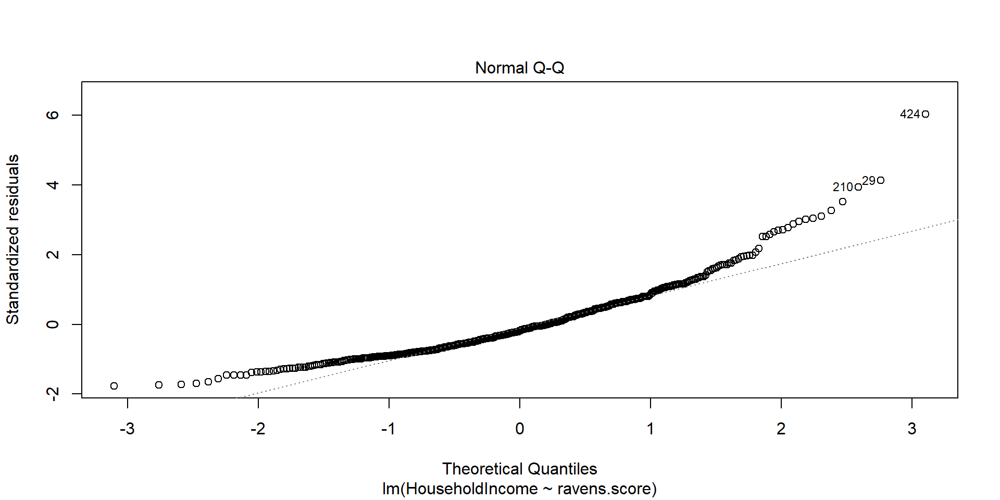

6 简单线性回归
Hu Chuan-Peng
2023-10-17
本次课内容
课前复习
简单线性回归
参数估计
基本假定和workflow
课前复习
线性回归解读的三种视角
\[观测项=结构项+随机项\]
观测项：因变量的实际取值
结构项：因变量与自变量间的结构关系，“预测值”
随机项：观测项中未被结构项解释的的部分，包含被忽略的结构因素，测量误差和随机干扰
描述性
\[观测项=概括项+残差项\]
不关注模型是否”真实”，只关注是否符合已被观察到的事实。
“奥卡姆剃刀定律”：如果许多模型对所观察的事实解释程度得当，除非有其他证据支持某一模型，否则我们倾向于选择 最简单的模型
预测性
\[观测项 = 预测项 + 误差项\]
- 已知一组自变量和因变量之间的关系，用新的数据给出有用的预测回答，通过经验规律做预测，对因果机制不在乎或不感兴趣。
因果性
\[观测项 = 机制项 + 干扰项\]
- 确立模型以发现数据产生的机制，发现”真实”的因果模型，但当前更多学者认为，这种模型并不存在，好的模型只是更接近真实，或更有意义
线性回归表达式
\(y = a + bX + \epsilon\)
y – Data
a+bX – model
\(\epsilon\) – error
线性回归变异分解


模型性能评估
\[R^2=\frac{SS_{R}}{SS_{T}}=\frac{\sum(y_{i}-\hat{y_{i}})^2}{\sum(y_{i}-\bar{y_{i}})^2}\]
Part 1 简单线性回归表达形式
线性回归表达式
\[y = a + bX + \epsilon\]
y – 因变量，Dependent variable
x – 自变量，Independent (explanatory) variable
a – 截距，Intercept
b – 斜率，Slope
\(\epsilon\) – 残差，Residual (error)
线性代数表达
\[y_i=a+bx_i+\epsilon \]
\[\downarrow\]
\[Y_1=\alpha +\beta_1 X_1+\epsilon_1\]
\[Y_2=\alpha +\beta_1 X_2+\epsilon_2\]
\[...\]
\[Y_n=\alpha +\beta_1 X_n+\epsilon_n\]
矩阵表达
\[Y_{n×1}=X_{n×2}\beta_{2×1}+\epsilon_{n×1}\]
\[Y=X\beta+\epsilon\]
\[Y_{n×1}=\begin{bmatrix} y_1 \\ y_2 \\ ... \\ y_n \end{bmatrix}\]
\[X_{n×2}=\begin{bmatrix} 1&x_{12} \\ 1&x_{22} \\ ...&... \\ 1&x_{n2} \end{bmatrix}\]
\[\beta_{2×1}=\begin{bmatrix} \alpha\\ \beta_1\end{bmatrix}\]
\[\epsilon_{n×1}=\begin{bmatrix} \epsilon_1\\ \epsilon_2\\ ...\\ \epsilon_n\end{bmatrix}\]
代码表达(r)
Formula=Y~X
Y: 因变量 X: 自变量
实例讲解
收入与问题解决能力是什么关系？
数据： “HouseholdIncome”(房产收入)和”Ravens.score”(瑞文推理测验)这两个变量进行研究(Eisenberg et al., 2019)
若我们只取前4个样本的数据：
| Y | X |
| 40000 | 2 |
| 19500 | 4 |
| 60000 | 3 |
| 81000 | 9 |
用线性方程表示为：
\[40000=\alpha +2*\beta_1 +\epsilon_1\]
\[19500=\alpha +4*\beta_1 +\epsilon_2\]
\[60000=\alpha +3*\beta_1 +\epsilon_3\]
\[81000=\alpha +9*\beta_1 +\epsilon_4\]
用矩阵表示：
\[\begin{bmatrix} 40000 \\ 19500 \\ 60000 \\ 81000 \end{bmatrix}=\alpha+\beta\begin{bmatrix} 2 \\ 4 \\ 3 \\ 9 \end{bmatrix}+\begin{bmatrix} \epsilon_1\\ \epsilon_2\\ \epsilon_3\\ \epsilon_4\end{bmatrix}\]
补充知识：矩阵运算
矩阵的加减法
\[n行m列的X±Y\]
\[X=\begin{bmatrix} x_{11}&x_{12} &... &x_{1m} \\ x_{21}&x_{22} &... &x_{2m} \\ ...&... &... &... \\... x_{n1}&x_{n2} &... &x_{nm} \end{bmatrix}\]
\[Y=\begin{bmatrix} y_{11}&y_{12} &... &y_{1m} \\ y_{21}&y_{22} &... &y_{2m} \\ ...&... &... &... \\... y_{n1}&y_{n2} &... &y_{nm} \end{bmatrix}\]
\[X±Y=\begin{bmatrix} x_{11}±y_{11}&x_{12}±y_{12} &... &x_{1m}±y_{1m} \\ x_{21}±y_{21}&x_{22}±y_{22} &... &x_{2m}±y_{2m} \\ ...&... &... &... \\... x_{n1}±y_{n1}&x_{n2}±y_{n2} &... &x_{nm}±y_{nm} \end{bmatrix}\]
\[C=A+B=X=\begin{bmatrix} 2&4 &-1 \\ 1&8 &7 \\ 3&5 &6 \end{bmatrix}+\begin{bmatrix} 7&5 &2 \\ 9&-3 &1 \\ 2&1 &8 \end{bmatrix}=\begin{bmatrix} 9&9 &1 \\ 10&5 &8 \\ 5&6 &14 \end{bmatrix}\]
矩阵的乘法
假设有维数有n × m 的矩阵X，以及维度为l × k的矩阵Y，则
当 m = l 时，矩阵X乘以矩阵Y才是可行的，结果矩阵XY才存在；
当 k = n 时，矩阵Y乘以矩阵X才是可行的，结果矩阵YX才存在。
下面假设m = l 成立，则矩阵Y的维数可以表示成m × k。设矩阵X乘以矩阵Y得到的结果矩阵为C；矩阵C的维数为n × k，其第i行第j列元素遵循如下的计算公式：
\[c_{ij}=\sum x_{ih}y_{hj}\]
\[C=AB=\begin{bmatrix} 1&9 &7 \\ 8&1 &2 \end{bmatrix}\begin{bmatrix} 3&2 &1 &5 \\ 5&4 &7 &3 \\ 6&9 &6 &8 \end{bmatrix}=\begin{bmatrix} 90&101 &106 &88 \\ 41&38 &27 &59 \end{bmatrix}\]
矩阵的转置
\[X=\begin{bmatrix} x_{11}&x_{12} &... &x_{1m} \\ x_{21}&x_{22} &... &x_{2m} \\ ...&... &... &... \\... x_{n1}&x_{n2} &... &x_{nm} \end{bmatrix}\]
\[X^T=\begin{bmatrix} x_{11}&x_{21} &... &x_{n1} \\ x_{12}&x_{22} &... &x_{n2} \\ ...&... &... &... \\... x_{1m}&x_{2m} &... &x_{nm} \end{bmatrix}\]
\[A=\begin{bmatrix} 1&5 \\ 4&8 \\ 7&9 \end{bmatrix}\]
\[A'=A^T=\begin{bmatrix} 1&4&7 \\ 5&8&9 \\ \end{bmatrix}\]
回归表达形式
- 矩阵表达
\[Y_{n×1}=X_{n×2}\beta_{2×1}+\epsilon_{n×1}\]
\[Y_{n×1}=\begin{bmatrix} y_1 \\ y_2 \\ ... \\ y_n \end{bmatrix}\]
\[X_{n×2}=\begin{bmatrix} 1&x_{12} \\ 1&x_{22} \\ ...&... \\ 1&x_{n2} \end{bmatrix}\]
\[\beta_{2×1}=\begin{bmatrix} \alpha\\ \beta_1\end{bmatrix}\]
\[\epsilon_{n×1}=\begin{bmatrix} \epsilon_1\\ \epsilon_2\\ ...\\ \epsilon_n\end{bmatrix}\]
收入与问题解决能力是什么关系？
数据： “HouseholdIncome”(房产收入)和”Ravens.score”(瑞文推理测验)这两个变量进行研究(Eisenberg et al., 2019)
\[Y_{n×1}=X_{n×2}\beta_{2×1}+\epsilon_{n×1}\]
\[\begin{bmatrix} y_1 \\ y_2 \\ ... \\ y_n \end{bmatrix}=\begin{bmatrix} 1&x_{12} \\ 1&x_{22} \\ ...&... \\ 1&x_{n2} \end{bmatrix}\begin{bmatrix} \alpha\\ \beta_1\end{bmatrix}+\begin{bmatrix} \epsilon_1\\ \epsilon_2\\ ...\\ \epsilon_n\end{bmatrix}\]
\[Y_{n×1}=X_{n×2}\beta_{2×1}+\epsilon_{n×1}\]
\[\begin{bmatrix} y_1 \\ y_2 \\ ... \\ y_n \end{bmatrix}=\begin{bmatrix} 1&x_{Ravens,1} \\ 1&x_{Ravens,2} \\ ...&... \\ 1&x_{Ravens,n} \end{bmatrix}\begin{bmatrix} \alpha\\ \beta_1\end{bmatrix}+\begin{bmatrix} \epsilon_1\\ \epsilon_2\\ ...\\ \epsilon_n\end{bmatrix}\]
Part 2 参数估计
最小二乘法
要建立一元线性回归方程，就要先计算方程中的参数a和b。根据最佳拟合原则，回归线是指散点图中每一个点沿Y轴方向到该直线的距离平方和最小的那条直线，即使误差平方和最小，这就是常规最小二乘法(ordinary least squares, OLS)的基本思想。


一般形式
\[\alpha^*,\beta^*=argmin\sum \epsilon^2\]
\[\downarrow\]
\[\alpha^*,\beta^*=argmin\sum(Y-a-bX)^2\]
\[\alpha^*,\beta^*=argmin\sum(Y-a-bX)^2\] \[\downarrow\]
要使\(\sum(Y-a-bX)^2\)最小，则\(\frac{\partial \sum(Y-a-bX)^2}{\partial a}=0\), \(\frac{\partial \sum(Y-a-bX)^2}{\partial b}=0\)
\[\downarrow\] 即\(-2\sum(Y-a-bX)=0\),\(-2\sum(XY-aX-bX^2)=0\)
\[\downarrow\] \(a=\bar{Y}-b\bar{X}\) \(b=\frac{\sum(X-\bar{X})(Y-\bar{Y})}{\sum(X-\bar{X})^2}=\frac{\sum XY-\frac{\sum X\sum Y}{n}}{\sum X^2-\frac{(\sum X)^2}{n}}\)
\[令\frac{\partial \sum(Y-a-bX)^2}{\partial a}=0, \frac{\partial \sum(Y-a-bX)^2}{\partial b}=0\]
\[(\alpha^*,\beta^*)位于最低点\] \[\sum(y-a-bX)^2最小\]
矩阵形式
\[Y=X\beta+\epsilon\]
\[\epsilon_{n×1}=\begin{bmatrix} \epsilon_1\\ \epsilon_2\\ ...\\ \epsilon_n\end{bmatrix}\]
\[\epsilon_{n×1}^T=\begin{bmatrix} \epsilon_1\\ \epsilon_2\\ ...\\ \epsilon_n\end{bmatrix}^T\]
\[\epsilon_{n×1}^T\epsilon_{n×1}=\begin{bmatrix} \epsilon_1\\ \epsilon_2\\ ...\\ \epsilon_n\end{bmatrix}^T\begin{bmatrix} \epsilon_1\\ \epsilon_2\\ ...\\ \epsilon_n\end{bmatrix}=\sum \epsilon_i^2\]
用矩阵形式表达其残差平方和
\(Y=X\beta+\epsilon\)
\(\begin{aligned} SS_R=& \epsilon'\epsilon\\ =&(y-Xβ)'(y-Xβ)\\ =&y'y-β'X'y-y'Xβ+β'X'Xβ\\ =&y'y-2y'Xβ+β'X'Xβ \end{aligned}\)
用矩阵形式表达其残差平方和
梯度下降法
在计算量较小时，直接求导得到解析解速度占优(如最小二乘法)，但是当数据量很大时，更适合利用计算机迭代式的梯度下降法进行求解。 梯度下降法的工作方式是在每次迭代中沿负梯度方向更新参数，使平均平方误差最小。
\[\hat{\beta_{t+1}} = \hat{\beta_t}-\gamma \bigtriangledown F(\hat{\beta_t})\]
\[\hat{\beta_{t+1}} = \hat{\beta_t}-\gamma \bigtriangledown F(\hat{\beta_t})\]
\[\downarrow\]
\[\bigtriangledown F(\hat{\beta_t})=(\frac{\partial F}{\partial \beta_0},\frac{\partial F}{\partial \beta_1})\]
某一点的梯度方向为函数在该点的导数
梯度下降法在线性回归参数估计中的表现

Part 3 基本假定和workflow
基本假定
模型设定假定(线性预设)
正交预设
残差方差齐性预设
正态分布预设
1.线性预设
(1)该预设规定Y的条件均值是自变量X的线性函数，若变量之间是非线性关系，线性回归的拟合效果不佳； 
(2)在某些情况下，我们会遇到非线性函数的形式。最常见的变换方式就是对数变换。 
2. 正交预设
(1)误差项𝝐和x不相关；
(2)误差项𝝐的期望值为0。
注意：不管正交假定是否成立，最小二乘估计在计算中已运用了这一预设。
2. 正交预设
若误差项𝝐的期望值不为0，
E(y)=E(a+bx)+E(ϵ)。
如果E(𝝐)不为零，回归系数将有无穷解，结果就是总体回归方程无法通过样本去估计。
3. 残差方差齐性
对X变量的每一个可能的值，Y变量有相同的总体方差。即残差的方差不受X变量取值的影响。

3. 残差方差齐性
若残差方差不齐性，误差较大的观测值将对拟合模型产生更大的影响。 
4. 残差正态分布预设
- 该预设规定残差项𝝐独立且同分布。
- 实际中无法确定𝝐的分布。
- 对于大样本数据，可根据中心极限定理对参数进行统计推断。然而在小样本情况下，我们只有假定𝝐服从正态分布时才能使用t检验。
4. 残差正态分布预设
若𝝐不满足正态分布预设，OLS的估计是有偏的。
WorkFlow
“HouseholdIncome”(房产收入)和”Ravens.score”(瑞文推理测验) 是否存在线性关系？
workflow
提出与研究假设对应的统计假设
选择统计模型
确定显著性水平
基于H0的统计模型，计算统计量
做出统计推断
1. 提出与研究假设对应的统计假设
回归分析中的两个假设检验
模型整体检验
H0: 两变量之间不存在线性关系
H1: 两变量之间存在线性关系
回归系统的显著性检验
H0: 𝛽_1=0
H1: 𝛽_1≠0

2. 检验线性回归的预设
vars n mean sd median trimmed mad min max
HouseholdIncome 1 522 48084.19 31252.53 41500 44474.63 27428.10 0 240000
ravens.score 2 522 9.45 4.30 9 9.44 4.45 0 18
range skew kurtosis se
HouseholdIncome 240000 1.47 3.83 1367.89
ravens.score 18 0.02 -0.83 0.19检验如下预设：
模型设定假定(线性预设)
正交预设
残差方差齐性
残差正态分布
线性假定&正交

参考线接近水平，符合线性预设
残差方差齐性
误差项𝝐的方差齐性
残差正态分布
残差的分布不符合正态分布 (p < .001)。
3. 确定显著性水平
使用传统的 alpha = .05
4. 计算统计量
模型整体检验:
该模型在统计上解释了一小部分但统计上显著的变异：
\(R^2=0.02, F(1, 520) = 8.05, p = 0.005, adj. R^2 = 0.01\)
回归系数检验: 瑞文推理分数在统计上具有积极且显著的效应：
\(β = 896.95，95\% CI [275.78, 1518.12]，t(520) = 2.84, p = 0.005, std. beta = 0.12, 95\% CI [0.04, 0.21]\)

5. 统计推断（做出决策）
使用简单线性模型检验瑞文推理的分数与家庭收入的关系。结果表明该模型显著地解释了一部分变异，\(R^2=0.02。F(1, 520) = 8.05, p = 0.005, adj. R2 = 0.01\)。瑞文推理分数对家庭收入的预测在统计上具有积极的效应，\(β = 896.95，95\% CI [275.78, 1518.12]，t(520) = 2.84, p = 0.005; Std. beta = 0.12, 95\% CI [0.04, 0.21]\)。
总结
一元线性回归的表达形式
一元线性回归中参数(intercept, slope)的估计
基本预设与workflow